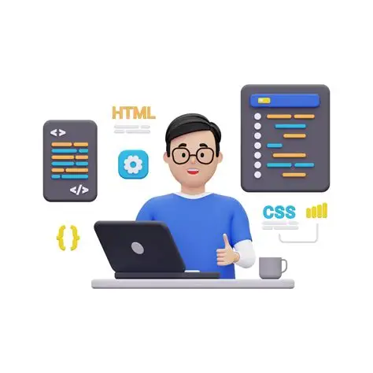

Frontend
HTML, CSS, React.js, TypeScript, Tailwind CSS, React Router
COMPUTER SCIENCE · BHOPAL, INDIA
I’m Ritesh Patidar, a Computer Science graduate focused on frontend and full-stack web development. I enjoy turning ideas into useful, thoughtfully built digital experiences.

01 / ABOUT ME
I’m Ritesh Patidar, a Computer Science graduate from Shri Vaishnav Vidyapeeth Vishwavidyalaya in Indore. My interests span frontend development and the tools behind complete web applications.
I work with React, JavaScript, Node.js, Express, and databases, and enjoy learning through hands-on projects. I value problem solving, teamwork, clear communication, and being quick to learn.
02 / TECHNICAL SKILLS
Technologies and practices from my resume.
HTML, CSS, React.js, TypeScript, Tailwind CSS, React Router
JavaScript, C++, Node.js, Express, REST APIs, authentication
MongoDB, SQL, MySQL, SQL Server, CRUD operations
Git, GitHub, GitHub Actions, Docker, CI/CD, Vercel/Render, Linux and AWS basics, documentation, testing, debugging, ChatGPT, Claude, Codex
03 / SELECTED PROJECTS
A selection of projects and practice work from my resume.
A personal finance project built with HTML, CSS, JavaScript, React DOM, and the Context API.
View on GitHubA fashion storefront interface recreated with semantic HTML and CSS.
View on GitHubAn electronics landing-page project using HTML, CSS, and JavaScript.
View on GitHubCalculator, to-do app, and food-items practice projects built while learning React.
View on GitHubA React-based social-media app for creating posts, viewing updates, and exploring a clean social feed layout.
View on GitHubProject descriptions and technologies are based on the details provided in my resume.
04 / EDUCATION & LEARNING
BACHELOR OF TECHNOLOGY · COMPUTER SCIENCE
Indore, Madhya Pradesh CGPA 6.09
HIGHER SECONDARY · MP BOARD
Madhya Pradesh CGPA 7.1
SECONDARY · CBSE
CGPA 5.7
CERTIFICATE
Web Development certificate completed through IBM Skills Network.
View certificate05 / GET IN TOUCH
Open to junior software development roles and internship opportunities. Feel free to reach out.
Email Ritesh +91 74897 72710